Лабораторная работа №5
Создание NURBS и Мета-форм
Цель:
- Научить использовать NURBS для создания изогнутых форм
- Изучить создавать различные типы Мета-форм
Ход работы
Использование NURBS для создания Изогнутых Форм (Поверхностей)
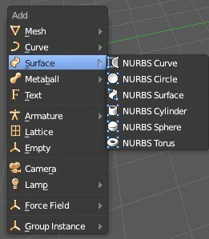
Рисунок 1
Если вы посмотрите в меню Surface, то увидите несколько вариаций форм, которые могут быть созданы.
Эти поверхности можно использовать как они есть или преобразовать в меш-объект и работать как с
обычными объектами, редактируя вершины.
Для преобразования NURBS-поверхности в меш, выделите нужную поверхность и нажмите комбинацию клавиш
Alt -" C ". В появившемся меню выберите " Mesh ". С помощью NURBS вы можете создавать различные
интересные модели.
Упражнение 1.
Сейчас мы поработает с NURBS Circle для создания необычного тоннеля.
Процесс создания тоннеля потребует создания нескольких профилей
NURBS окружностей и соединения их вместе. Первое, что мы сделаем - добавим NURBS Окружность. Для
этого нажмите Shift -" A ", выберите Surface, затем NURBS Circle. В Режиме Редактирования выберите
несколько вершин и слегка измените форму окружности. После этого выйдите из режима редактирования.
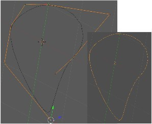
Рисунок 2
Перейдите в вид, в котором вы видите окружность сбоку (попробуйте вид спереди, если создавали окружность
в виде сверху). Возможно вам захочется переключить режим затенения в Каркасный (Wireframe). Используйте
сочетание клавиш Shift -" D " для копирования окружности (трех-четырех копий будет достаточно).
После этого повертите ваш вид для удобной работы с каждой окружностью по отдельности и в Режиме
Редактирования слегка измените форму каждой из них.
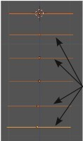
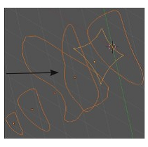
Рисунок 3
После изменения форм, выйдите из режима редактирования и выделите все окружности Правой Кнопкой Мыши при
нажатой клавише Shift.
Для объединения всех окружностей нажмите Ctrl -" J ".
В заключение, нажмите клавишу Tab для перехода в Режим Редактирования, нажмите клавишу " A " для
выделения всех вершин, затем нажмите " F " для создания граней.
Результатом должен стать плавно изогнутый объект.
Параметры формы можно контролировать в разделе " Object Data " в Окне Свойств.
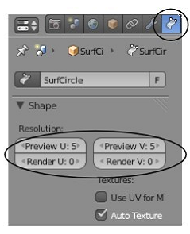
Рисунок 4
Если вам нужно преобразовать этот объект в Меш, нажмите Alt -" C ". Это отличный способ для создания
корпуса лодки и других подобных объектов.
https://drive.google.com/file/d/1NrG2SCTwqhBHdg9Pa2pyEC5rP-kVWWO4/view?usp=sharing
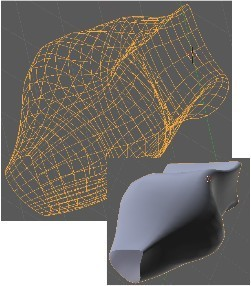
Рисунок 5
Задание 1.
Шаг 1Будем создавать сердце влюбленных используя стандартную NURBS сферу деформируя ее при помощи
контрольных точек.
Добавьте NURBS сферу. NURBS сферу можно добавить из диалога нажав клавишу пробел или Shift+A.В
появившемся меню выбираем пункт указанный на рисунке:
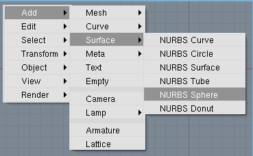
Рисунок 6
Затем масштабируйте полученную сферу нажав клавишу S и перемещая мышь, когда добьетесь желаемого
результата зафиксируйте его нажав левую клавишу мыши.
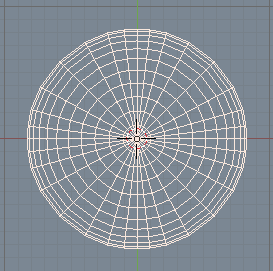
Рисунок 7
Переключитесь в режим вида спереди нажав на цифровой клавиатуре 1, и войдите в режим редактирования нажав
клавишу Tab. Отмените выделение всех вершин нажав клавишу A. Используя выделение прямоугольником B
выберите средние верхние контрольные точки. Должно получится как на рисунке:
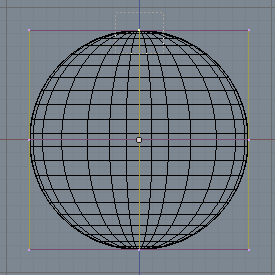
Рисунок 8
Переключитесь в режим вида сверху. Убедитесь, что выбраны все вершины как на рисунке, если все в порядке
вернитесь в режим вида спереди .
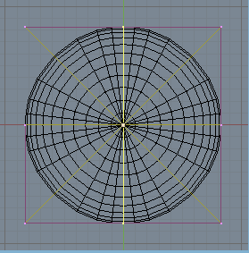
Рисунок 9
Войдите в режим перемещения, и переместите немного вниз выбранные вершины. Нажатие средней клавиши мыши
позволяет перемещать выбранные точки только по одной оси, зафиксируйте положение .Должно получится
что-то типа этого:
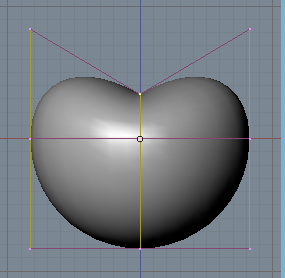
Рисунок 10
Отмените выделение всех вершин нажав клавишу А. Используя выделение прямоугольником B выберите верхние
левые и правые контрольные точки, используя режим масштабирования S и перемещения G добейтесь похожего
результата.
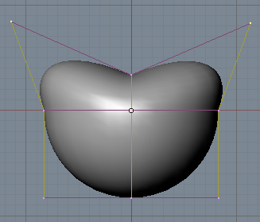
Рисунок 11
Отмените выделение всех вершин. Используя выделение прямоугольником выберите нижние левые и правые
контрольные точки, используя режим масштабирования добейтесь такого результата как на рисунке:
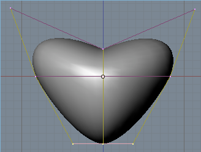
Рисунок 12
Используя режим перемещения поднимите выделенные вершины немного вверх.
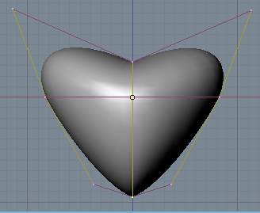
Рисунок 13
Теперь, в окне вида спереди наше сердце выглядит лучше, но когда переключим на вид сбоку, Вы увидите, что
наше сердце слишком толстое!
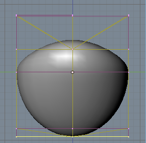
Рисунок 14
Выделите все вершины клавишей и масштабируйте по оси X. Для того чтобы сделать это, перемещайте вашу мышь
в горизонтальной плоскости и нажмите среднюю клавишу мыши . Это заблокирует перемещение в одной
плоскости.
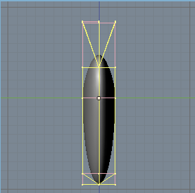
Рисунок 15
Результат после масштабирования.
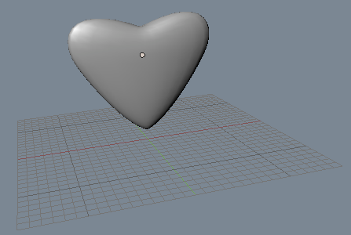
Рисунок 16
Эффект Жидкости и Капель с Использованием Метa-форм
Несколько версий назад Blender мог создавать всего один вид Метa- формы - Meta Ball. Прошло совсем
немного времени и программисты добавили новые формы и почистили код.
Теперь вы можете создавать различные типы Мета-форм.
Все они работают по тем же принципам. Как только объекты приближаются достаточно близко друг к другу, они
начинают "притягиваться" и "течь" вместе. Мета-формы могут быть текстурированы и анимированны как и
любые другие объекты в Blender. Ray-Tracing эффекты, такие как отражение и прозрачность, могут создать
интересные композиции при применении их к Мета-формам.
Мета-формы ведут себя так же как и другие объекты, за исключением одного "но" :
Первая созданная Мета-форма будет родительской для всех остальных. Когда вы будете перемещать ее,
остальные мета-формы будут поворачиваться за ней. Материалы всех Мета-форм так же связанны.
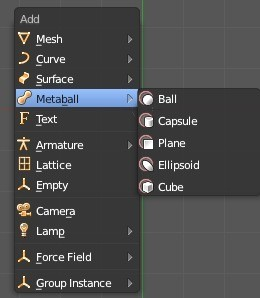
Рисунок 17
Мета-формы могут показаться слегка запутанными, в первую очередь, из-за их взаимодействия между собой.
Например, для выделения определенной Мета-формы вы щелкаете ПКМ по окружности (Selector Ring), вокруг
этой формы. Но если щелкнуть по самому мешу мета-формы, то меши других мета-форм также оказываются
выделенными. Помните, мета-формы связанны и управляются первой добавленной в сцену Мета-формой. Изменяя
материал первой формы - вы изменяете внешний вид всех Мета-форм.
Материалы всех Мета-форм также связаны.
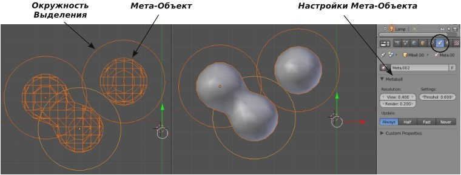
Рисунок 18
Для изменений формы только одного объекта выделяйте окружность вокруг него. Вы можете изменять внешний
вид и качество эффектов Мета-форм в разделе Object Data на панели Metaball. Попробуйте
поэкспериментировать с этими параметрами.
Если при создании мета-форм вы находились в Режиме Редактирования, то все мета-формы окажутся
объединенными в один объект.
Создавайте новые мета-формы находясь в Объектном Режиме.
Задание 2.
Создание Лавовой Лампы
Создайте новую сцену Blender, удалите из нее начальный куб и сохраните с именем " Lava_Lamp ". В этом
задании мы экструдируем окружность, создадим NURBS поверхность и используем Мета-формы для создания
эффекта Лавы в Лампе.
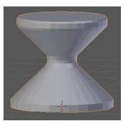
Рисунок 19
Начнем с создания Меш-Окружности в виде сверху. После добавления окружности на Полке Инструментов
выберите опцию Fill (заполнить окружность). В Виде Спереди перейдите в Режим Редактирования и
Экструдируйте (клавиша "E") окружность для получения формы основания лампы (как на иллюстрации справа).
Наверняка вам захочется сгладить меш основания (Кнопка Smooth в Полке Инструментов) и активировать
функцию Auto-Smooth (в разделе Object Data в Окне Свойств).
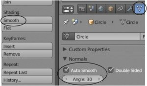
Рисунок 20
Мы могли бы создать стеклянную часть лампы простым экструдированием окружности, как мы делали с
основанием, но для практики давайте воспользуемся приемом "лофтинга формы" - сформируем форму по
образующим ее профилям — NURBS - окружностям. Переключитесь обратно в вид сверху и откройте меню " Add "
(Shift -" A "), в разделе Surface выберите NURBS Circle.
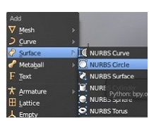
Рисунок 21
После добавления NURBS - окружности переключитесь в вид спереди и продублируйте ее несколько раз.
Измените размер окружностей для получения конусообразной формы стеклянной части лампы. Удерживая клавишу
"Shift" выделите все окружности и объедините их с помощью
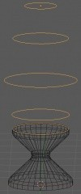
Рисунок 22
Самое время сформировать поверхность по окружностям. Перейдите в Режим Редактирования и выделите все
вершины клавишей "A". Для создания поверхности нажмите клавишу "F". Она может выглядеть не совсем так,
как вы хотите. Снимите выделение со всех вершин (клавиша "A") и в виде спереди инструментом выделения
прямоугольником (клавиша "B") выделите отдельную окружность. Измените ее размер или переместите ее для
получения нужной формы.
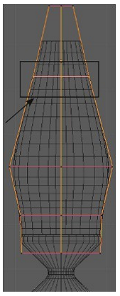
Рисунок 23
После того как вы закончите, форма должна выглядеть близко к иллюстрации.
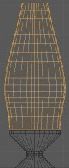
Рисунок 24
Последним шагом в создании стеклянной части лампы будет преобразование NURBS-поверхности в Меш-объект.
Используйте для этого сочетание клавиш Alt -"C". В появившемся меню выберите " Mesh from Curve / Meta /
Surf / Text ". Добавьте мешу сглаживание (Smooth) и включите опцию Auto-Smooth.
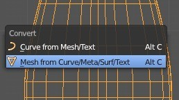
Рисунок 25
Теперь нам нужно сформировать верхушку лампы. Сделайте это тем же способом, как и основу лампы, используя
меш-окружность. После создания формы, применения сглаживания (Smooth) и Auto-Smooth объект может
выглядеть как на изображении.
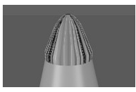
Рисунок 26
Для исправления этого эффекта нам нужно изменить параметры нормалей граней.
Для этого перейдите в Режим Редактирования и выделите все вершины меша. На Полке Инструментов найдите
блок "Normals" и нажмите кнопку "Recalculate" для перерасчета направления нормалей всех граней в одну
сторону.
Возможно понадобиться нажать кнопку "Flip Direction" для изменения направления всех нормалей в обратную
сторону. Это должно решить проблему.
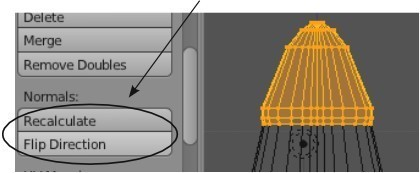

Рисунок 27
И не забывайте про кнопку "Remove Doubles" для объединения вершин в верхушке формы.
Самое время создать красивый рендер вашей лампы. Наложите подходящие материалы на 3 части лампы.
Используйте Ray-Tracing для создания стекла средней части. Поэкспериментируйте с параметрами Fresnel и
IOR (искажение) для получения эффекта прозрачного геля.
Возможно вам потребуется увеличить значение параметра Depth.
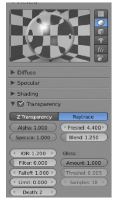
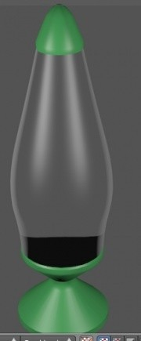
Рисунок 28
Лампа готова и самое время добавить лаву.
Начните с добавления формы Meta Ball. Помните, что первая добавленная форма будет контролировать
материалы и поведение следующих мета-форм. Определите нужное количество добавляемых мета форм по своему
желанию. Смаштабируйте их при необходимости. Используйте сразу 3 основных вида для точного расположения
мета-форм внутри лампы. Наложите на них материал и сделайте рендер
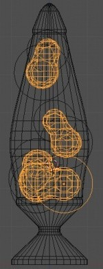
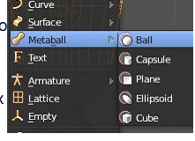
Рисунок 29
Ваша лавовая лампа должна выглядеть как изображение. Несмотря на то, что вы наложили материал (в моем
случае зеленый) мета-формы выглядят черными. Это связанно с эффектом освещения и применением Ray-Tracing
на стеклянной части.
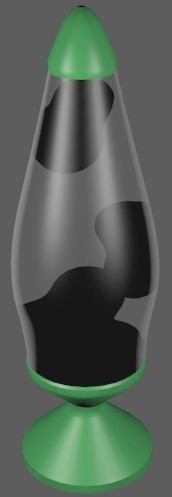
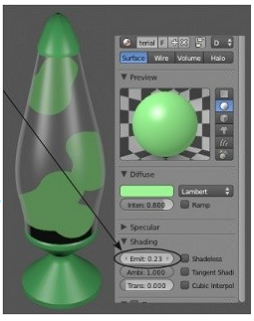
Рисунок 30
Что бы это исправить, перейдите в раздел настроек материалов ("Material") мета-форм и в панели "Shading"
найдите слайдер Emit. Это даст зеленый цвет мета-объектов но они будут выглядеть плоско.
Нашим следующим шагом будет добавление лампы Point на дно стеклянной части. В настройках лампы выключите
все эффекты теней. Теперь при рендере вы должны увидеть эффекты освещения на вашей лаве.
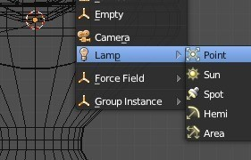
Рисунок 31
Выглядит гораздо лучше, но мы можем использовать еще и эффект Ненаправленного Освещения (Indirect Light).
Так как мы увеличили значение параметра Emit в настройках материала лавы, настроив параметры окружения мы
получим эффект свечения от наших мета-форм.
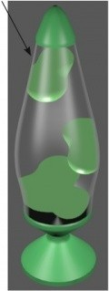
Рисунок 32
Перейдите в раздел World, найдите в нем панели Gather и нажмите кнопку "Approximate". Затем, активируйте
панель "Indirect Light"
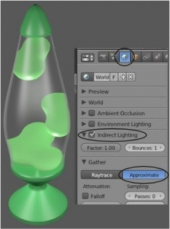
Рисунок 33
Сделайте рендер изображения и проверьте результат. Если потребуется, измените настройки параметров.
Контрольные вопросы
- Назовите вариаций форм NURBS.
- Перечислите основные типы Мета-фом
- Мета-формы ведут себя так же как и другие объекты, за исключением чего?